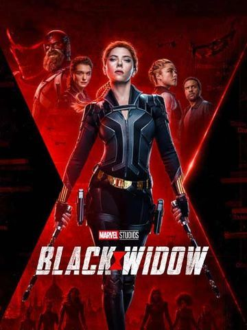

Black Widow
At birth the Black Widow "aka Natasha Romanova" is given to the KGB, which grooms her to become its ultimate operative. When the U.S.S.R. breaks up, the government tries to kill her as the action moves to present-day New York, where she is a freelance operative.
n Marvel Studios’ action-packed spy thriller “Black Widow,” Natasha Romanoff aka Black Widow confronts the darker parts of her ledger when a dangerous conspiracy with ties to her past arises. Pursued by a force that will stop at nothing to bring her down, Natasha must deal with her history as a spy and the broken relationships left in her wake long before she became an Avenger.
Development of a Black Widow film began in April 2004 by Lionsgate, with David Hayter attached to write and direct. The project did not move forward and the film rights to the character reverted to Marvel Studios by June 2006. Johansson was cast in the role for several MCU films beginning with Iron Man 2 (2010). Marvel and Johansson expressed interest in a solo film several times over the following years, before Schaeffer and Shortland were hired in 2018. Benson joined in early 2019, with Pearson added later. Filming took place from May to October, in Norway, Budapest, Morocco, Pinewood Studios in the United Kingdom, and in Atlanta and Macon, Georgia.
Black Widow is scheduled to be released in the United States on May 7, 2021, as the first film in Phase Four of the MCU. Its release was delayed twice from an original May 2020 date due to the COVID-19 pandemic.
